Axial Spine Radiology
- Read every spine film with ABCS: Alignment, Bones, Cartilage (disc spaces) and joints, Soft tissues. Then look at everything else on the film, and compare with old imaging.
- The lateral C-spine is the most important view. Trace the four lines (anterior vertebral, posterior vertebral, spinolaminar, spinous process). ADI < 3 mm in adults and < 5 mm in children. Prevertebral soft tissue < 7 mm at C2 and < 22 mm at C6.
- Count the levels: the first rib marks T1, and the 12th rib is just above L1. In real acute trauma, CT usually replaces x-ray, and you avoid the obliques in a collared neck.
- Posterior-element involvement means an unstable fracture. Perched or dislocated facets with a slip after an MVC mean MRI and urgent neurosurgery.
- Pars interarticularis = the neck of the Scotty dog on the oblique lumbar view. A defect is the “collar”: isthmic spondylolisthesis. Cobb angle > 10° = scoliosis, and > 50° means considering surgery.
Learning Objectives
- Determine a differential diagnosis and management plan for patients with axial pain: recognize normal spinal anatomy on plain x-rays and identify common spinal anomalies on plain x-rays (fracture, spondylolysis, scoliosis).
Dr. Vishal Kalia, radiology. A text-and-image Rise module with no recordings (the module estimates about an hour). It covers the x-ray objective that 7.2 also lists, and pairs with the clinical side in 7.3. Every image below is from the module's own PDF. Most come in pairs: the plain film, and a colour-coded copy with the anatomy highlighted.
The Systematic Approach: ABCS
| Step | What to check |
|---|---|
| A — Alignment | The overall curves: cervical mild lordosis, thoracic kyphosis (curving posteriorly), lumbar lordosis. Then how each vertebra lines up with its neighbours, using the alignment lines (below). |
| B — Bones | Follow the cortices, the dense white outer layer. Check vertebral body height, pedicles, transverse processes, and every other bone you can see. |
| C — Cartilage and joints | Cartilage isn't radiopaque, so you see the disc space instead. A disc may show up if it calcifies or ossifies, and you may see bony bridging (ankylosis) across it. Check the facet joints too. |
| S — Soft tissues | The prevertebral tissues (in front of the vertebrae) and the paraspinal tissues (alongside) |
| Then: the whole image | C-spine films catch part of the lungs, T-spine films the lungs and mediastinum, and L-spine films the abdominal soft tissues. Compare with prior imaging whenever you can, because subtle changes are easier to see side by side. |
Normal Anatomy, View by View
Cervical, thoracic, lumbar, and the sacrum.
Cervical Spine
| View | Purpose |
|---|---|
| AP | Count the vertebrae, spinous process alignment, facets, uncinate and transverse processes |
| Lateral | The single most important view: bones, the four alignment lines, ADI, prevertebral soft tissue, airway |
| Right and left oblique | The neural foramina |
| Open-mouth (odontoid or dens) | C1–C2 alignment |
| Flexion and extension | Not routine. Only if subluxation or instability is suspected. |
With a patient in a cervical collar, the obliques are skipped because you don't want to move the neck; AP and lateral views give an overview if possible. In fact most acute trauma patients get a CT instead. Plain films miss subtle fractures, because soft tissue overlaps and the image is only two-dimensional.
AP view
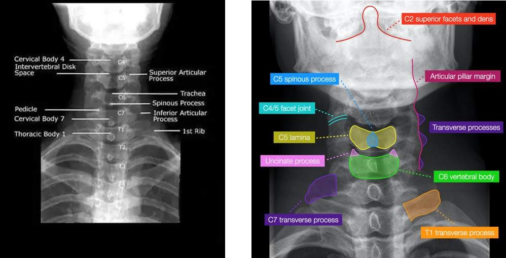
Lateral view
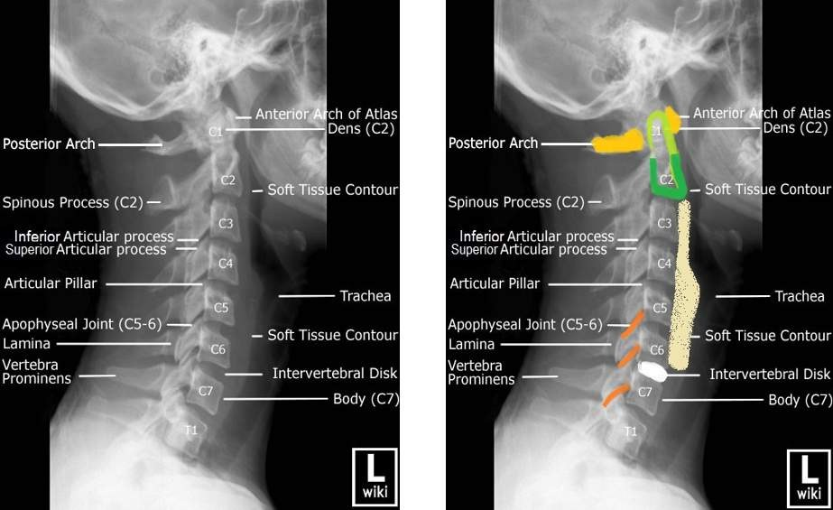
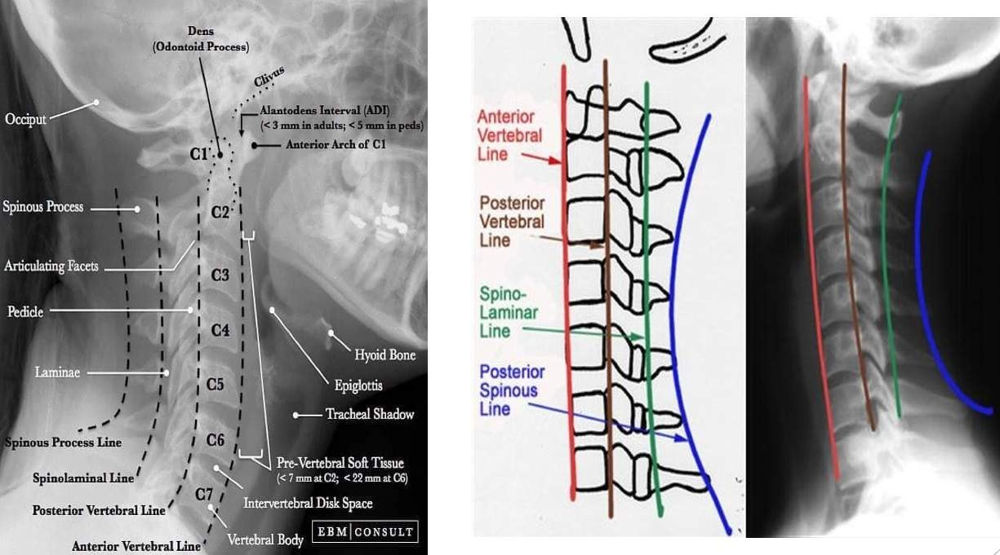
| Measurement | Normal | Why it matters |
|---|---|---|
| Atlantodental interval (ADI): back of the anterior arch of C1 to the front of the dens | < 3 mm adults, < 5 mm children | C1–C2 instability. Flexion and extension views can test it. |
| Prevertebral soft tissue at C2 | < 7 mm | Widened by retropharyngeal abscess, trauma or hematoma |
| Prevertebral soft tissue at C6 | < 22 mm, and never wider than the AP width of the vertebral body (the eyeball check) | |
| Airway: nasopharynx → oropharynx → laryngopharynx → trachea | Patent, with a smooth contour | Narrowing, e.g. from a foreign body. The hyoid, thyroid and cricoid cartilage, tracheal air column and the thin curved epiglottis may also be visible. |
Oblique and open-mouth views
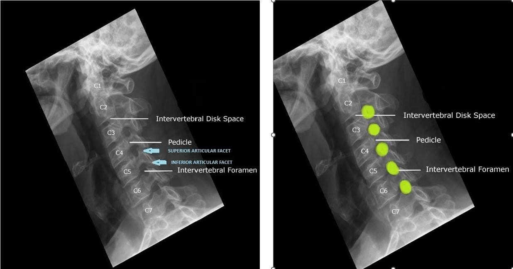
Oblique: the foramina open up (green ovals, C2–3 down to C6–7), with the pedicles forming their upper and lower borders. Both sides are imaged because each oblique shows one side. The spinous processes look foreshortened. From the module.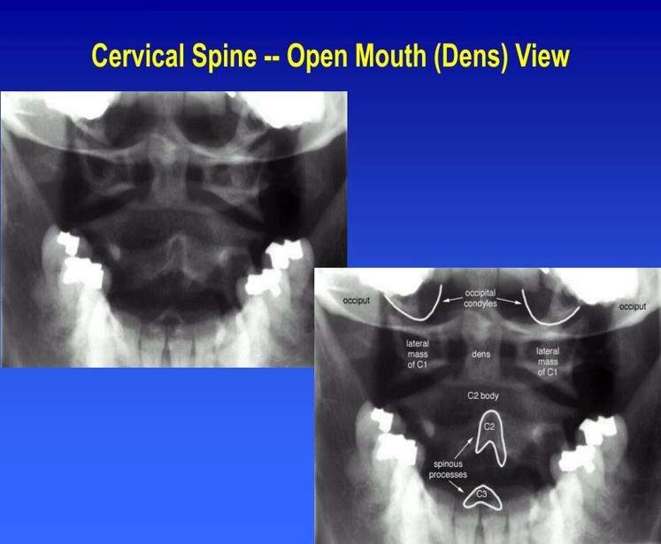
Open-mouth (dens) view. The lateral masses of C1 should line up with C2, with no overhang at their outer margins, and the joint spaces should be symmetric. Overhang suggests injury or instability. One-sided narrowing suggests degeneration or inflammation. From the module.Thoracic Spine
The standard views are AP, lateral and the swimmer's view.
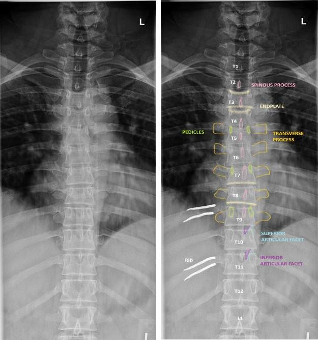
AP thoracic. Count by the ribs: the first rib gives T1 and the 12th gives T12. Spinous processes look like teardrops over the bodies (pink). The endplates are the sclerotic margins against the discs. Pedicles are corticated ovals on each side (green rings). Then the transverse processes and ribs. A mild positional scoliosis can appear when the patient is in pain. From the module.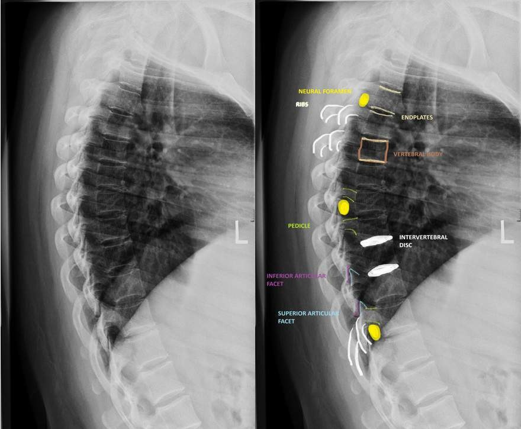
Lateral thoracic. Check the kyphosis. The pedicles look elongated here and bound the oval neural foramina (yellow). The facet joints are easiest to see in the mid-to-lower thoracic spine, and the curved lines behind are the ribs. From the module.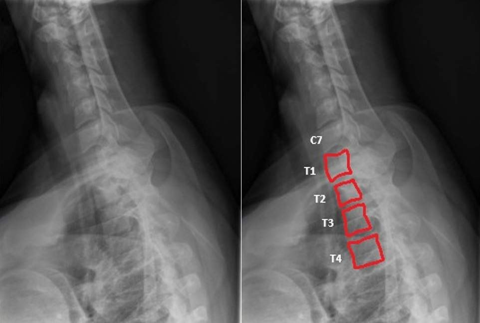
Swimmer's view, a lateral film taken with one arm raised and the beam centred higher, over the cervicothoracic junction. It's for the upper thoracic spine, which overlapping soft tissue hides on the standard views. Find T1 just below C7 (the prominent spinous process) or by its rib. From the module.Lumbar Spine and Sacrum
The standard views are AP and lateral. Obliques are added for the pars, and dedicated sacrum or SI views only when requested.
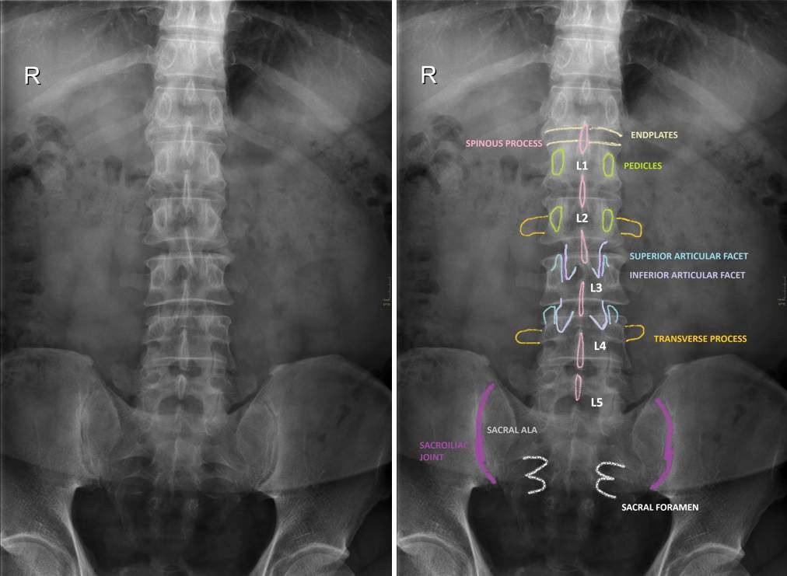
AP lumbar. L1 is the vertebra just below the 12th rib; count down to L5. Some people have four or six lumbar-type vertebrae (transitional vertebrae). The bodies are bigger and the processes more horizontal than thoracic ones. The pedicles are round with sclerotic margins. Inferiorly, check the sacral ala, the sacral foramina and arcuate lines (for symmetry) and the SI joints (purple). From the module.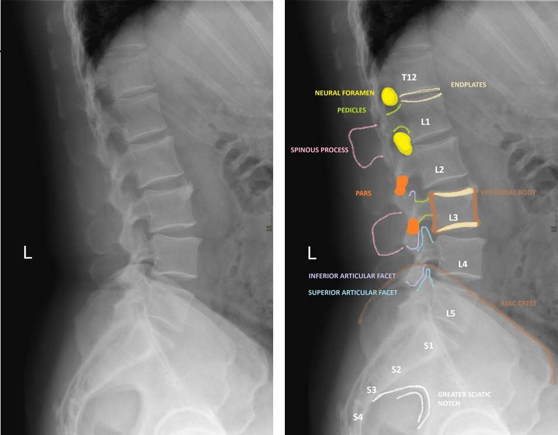
Lateral lumbar. Bodies, endplates and disc spaces; pedicles (green) and the foramina between them (yellow); the facets at L4–5. Then the pars interarticularis (orange). A defect there can progress to spondylolisthesis and can cause low back pain. From the module.Check both renal areas for stones, the right upper quadrant for gallstones, the colon for fecal loading, the bowel for abnormally dilated loops, and look for free air. That's on top of the paraspinal soft tissues.
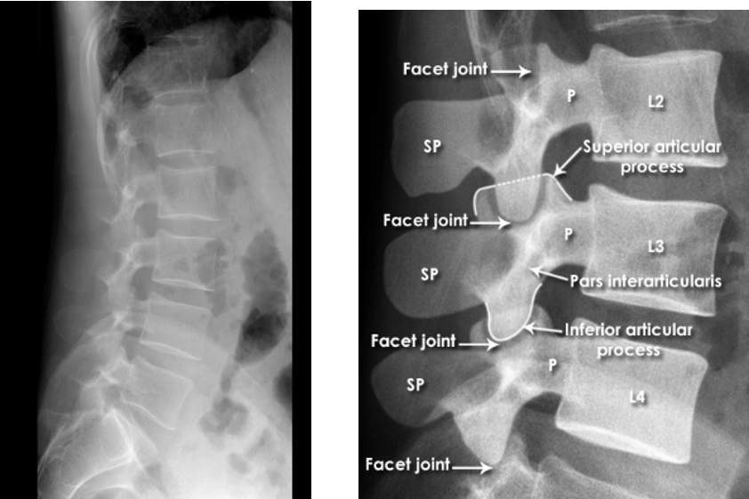
The pars interarticularis is the bone between the superior and inferior articular processes. From the module.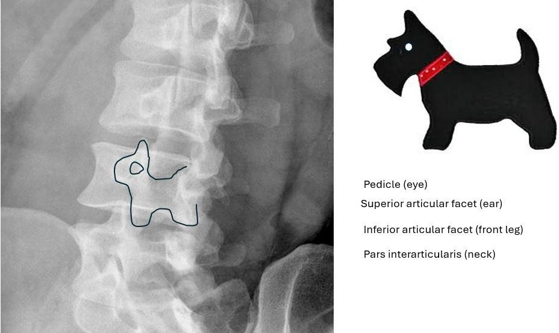
The Scotty dog on the oblique view. Nose = transverse process, eye = pedicle, ear = superior articular facet, front leg = inferior articular facet, neck = pars interarticularis. A defect shows as a lucent line through the neck: a collar. From the module.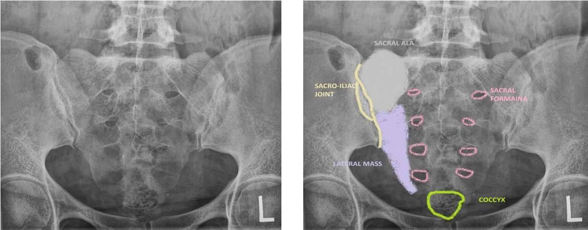
Pathology
Trauma, degeneration, infection, inflammation and tumour.
A Mnemonic for Any Bone Film: TIMS-C
| Letter | Category | Examples |
|---|---|---|
| T | Trauma, tumours | Hyperflexion and hyperextension injuries, compression and burst fractures, distraction injuries; bone tumours. Trauma is one of the commonest spine pathologies you'll meet. |
| I | Infection, inflammatory, idiopathic | RA, ankylosing spondylitis; idiopathic means cause unknown |
| M | Metabolic, malignancy | — |
| S | Systemic, senile | Leukemia, lymphoma; osteoarthritis |
| C | Congenital | Looked for mostly in the immature skeleton |
Cervical Spine Trauma
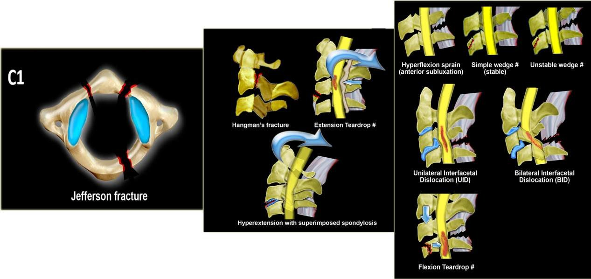
| Injury | What it is |
|---|---|
| Jefferson fracture | C1: fractures through the anterior and posterior arches at several sites |
| Hangman's fracture | C2: bilateral fractures through the pars interarticularis, giving a traumatic spondylolisthesis of C2. Unstable. |
| Extension teardrop | A fragment off the anteroinferior corner of the body (a hyperextension injury); rotational stress can injure the cord |
| Hyperextension with spondylosis | Can widen a disc space without any visible fracture. In the right setting that means a ligamentous injury, so get an MRI. |
| Hyperflexion injuries | An interspinous ligament injury widens the gap between spinous processes. A simple wedge (anterosuperior corner) is stable; an unstable wedge also involves the posterior structures. |
| Facet dislocation | The facets lose their congruence and “perch”, making a step. Unilateral causes less slip and bilateral more. Can come with a cord injury. |
| Flexion teardrop | The anterior body, with injury to the cord, posterior column and interspinous ligaments |
| Dens fractures | Type I tip; type II mid-portion or base; type III into the C2 body. You don't need these in detail. |
Classification systems vary, but for this module: fractures confined to the front of the vertebral body are more likely stable. Once a fracture reaches the posterior elements, it is unstable. That's why radiologists always comment on posterior-element involvement. Ligament injuries can be invisible on plain film, so think MRI.
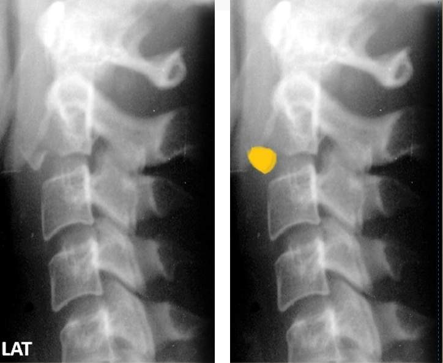
Extension teardrop of C2: the anteroinferior corner fragment, highlighted. From the module.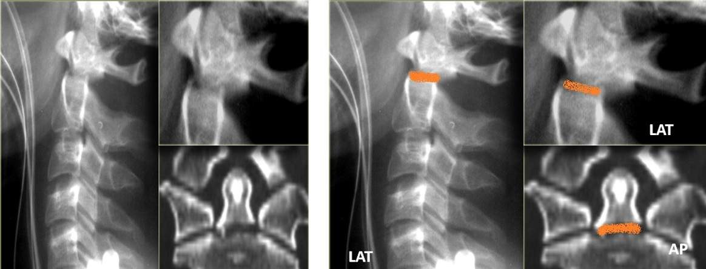
Type II dens fracture across the base, seen on x-ray and confirmed on CT. From the module.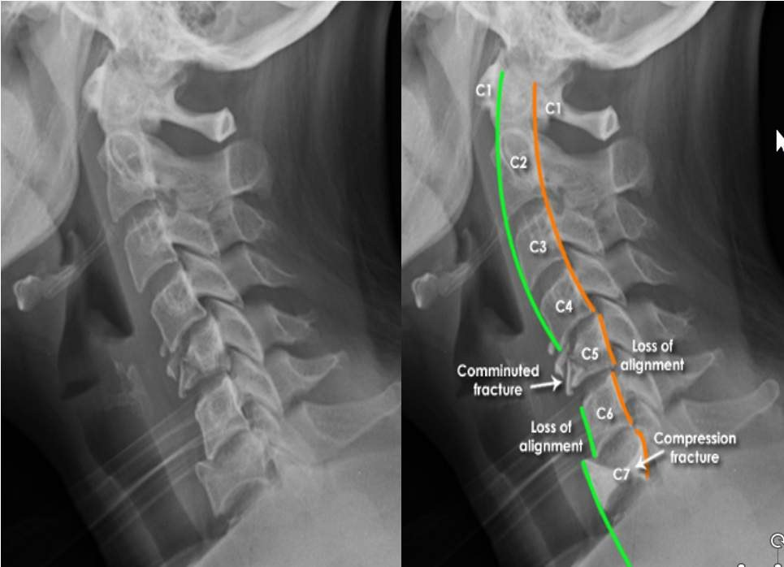
Fractures at C5 and C7. A comminuted fracture at the front of C5 and a compression fracture of C7 (lost central height). The C5–6 disc space is widened, and both the anterior (green) and posterior (orange) lines step, with C6–7 alignment lost. The middle column is involved. The facets stay congruent. From the module.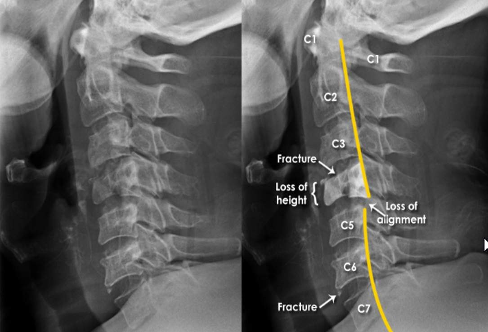
An unstable C4 fracture. C4 has lost height, the adjacent discs are mildly widened, and a fragment is pushed back toward the canal, breaking the posterior vertebral line (yellow). Because it extends past the back of the body, it's unstable. The film labels a second fracture lower down, at the front of C6–7. From the module.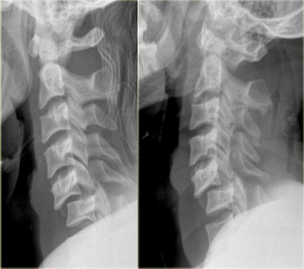
Perched facets. C5 has slipped forward on C6, so the facets lose their parallel alignment and perch on each other. After an MVC this is a serious injury: the cord can be compromised, and an x-ray can't show the cord, so MRI and an urgent neurosurgical consult may be needed. From the module.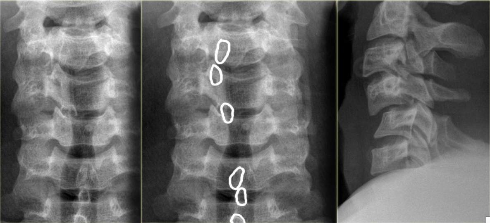
Unilateral facet dislocation at C4–5. On the AP the spinous processes swing off the midline with uneven spacing, a clue even without a lateral view. Look for crowding, asymmetry or lateral shift. From the module.Degeneration and Soft-Tissue Disease
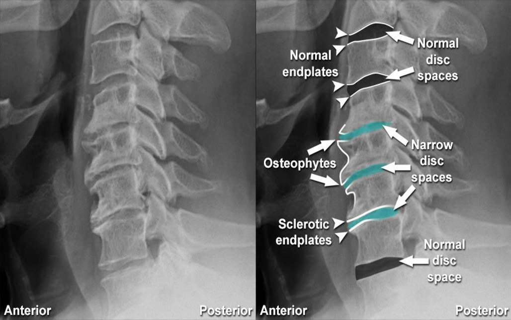
Cervical spondylosis, the most common non-traumatic C-spine pathology. The lordosis is straightened (perhaps from muscle spasm), the discs are narrowed, there are anterior marginal osteophytes, and the endplates are sclerotic (brighter than normal C2–3). These are the same signs as OA in other joints, such as the shoulder and knee. From the module.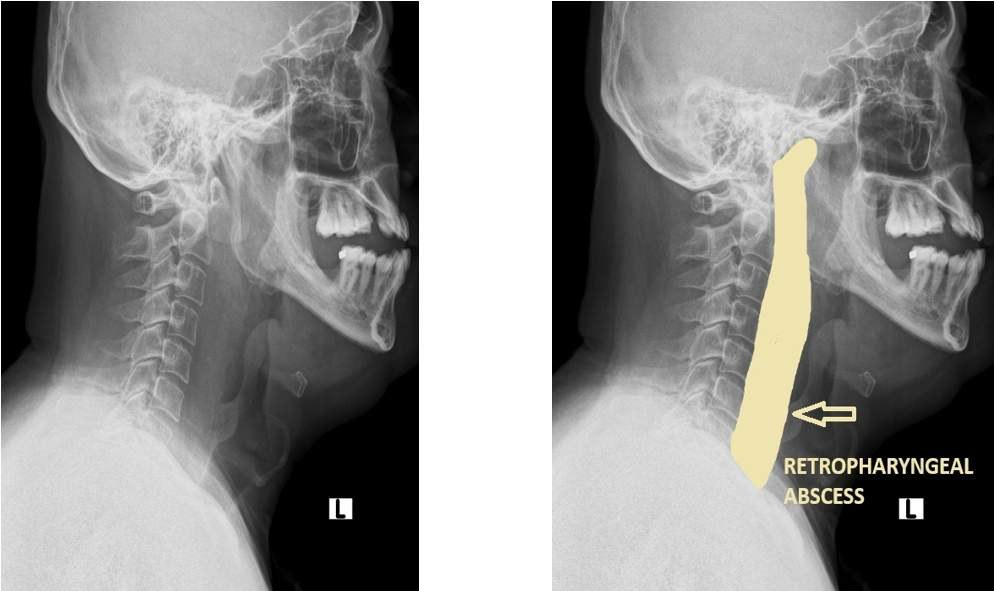
Retropharyngeal abscess. The prevertebral tissue is wider than the vertebral body at C5–6 and pushes the airway forward. Look for small air locules, which can mean an anaerobic infection or an airway problem. The reason you always check the soft tissues. From the module.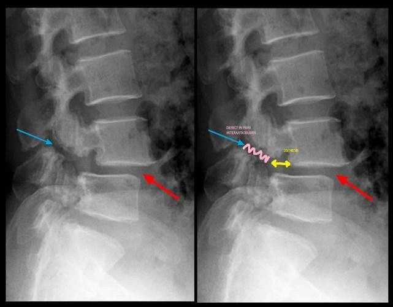
Isthmic spondylolisthesis. L4 has slipped about 4–5 mm forward on L5, the disc is narrowed, and there is a pars defect (pink, blue arrow). The red arrow marks the narrowed disc. Without a pars defect, a slip is usually degenerative, in older adults. Slips are measured in mm and graded. From the module.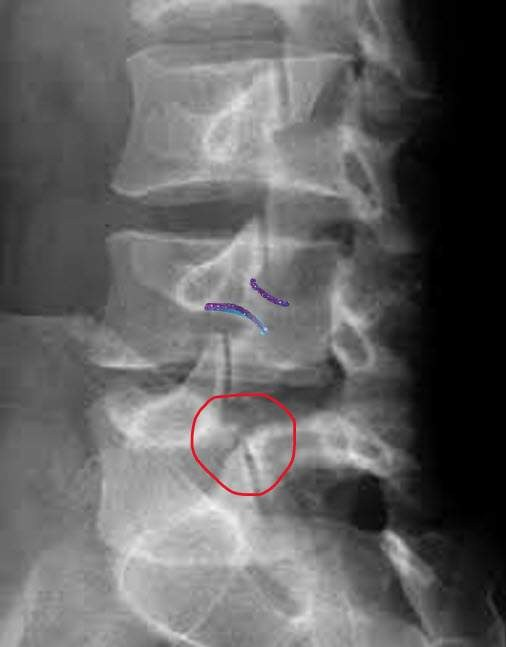
The Scottie dog collar sign at L5 (red circle): a lucent line through the neck means a pars defect. The neck above, outlined in purple, is intact. The oblique view helps when the lateral is equivocal. From the module.Inflammatory Disease and Tumour
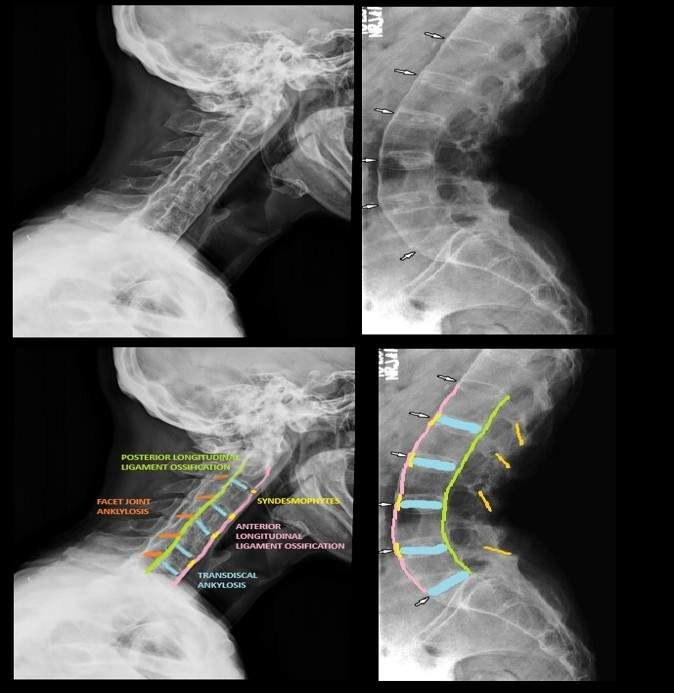
Late ankylosing spondylitis. The ALL and PLL are ossified, with ossification across the discs (transdiscal ankylosis) and fused facets, especially in the neck. A rigid spine fractures easily, particularly next to the segments that still move. From the module.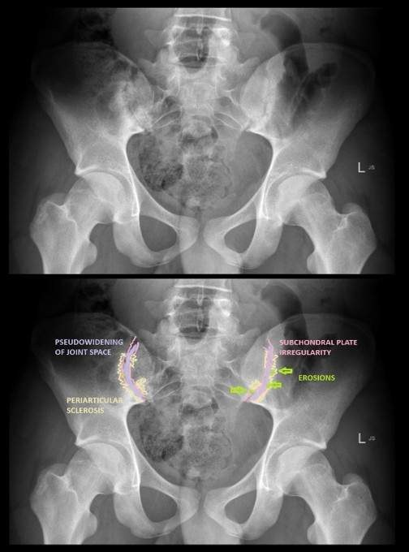
Sacroiliitis. Erosions on both the iliac and sacral sides make the joints look wider (pseudo-widening), with mild sclerosis on the iliac side. Ankylosis comes late. Active inflammation (marrow edema) needs an MRI, because plain film isn't sensitive or specific for it. From the module.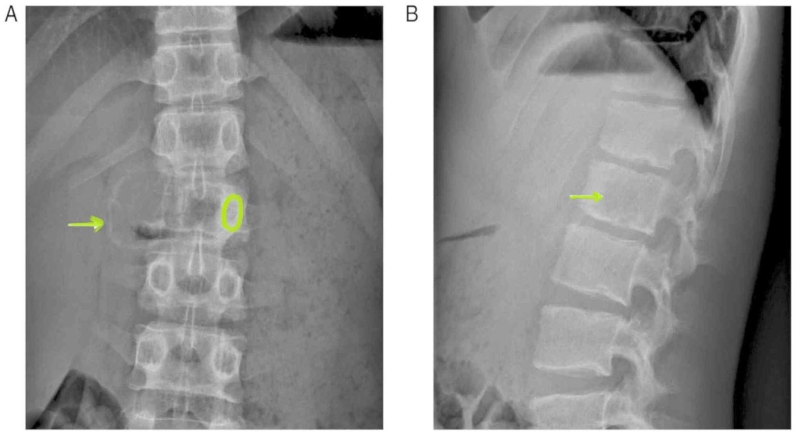
Hardware, Scoliosis & Normal Variants
What you'll see on films after surgery, and what is normal but looks odd.
Spinal Hardware
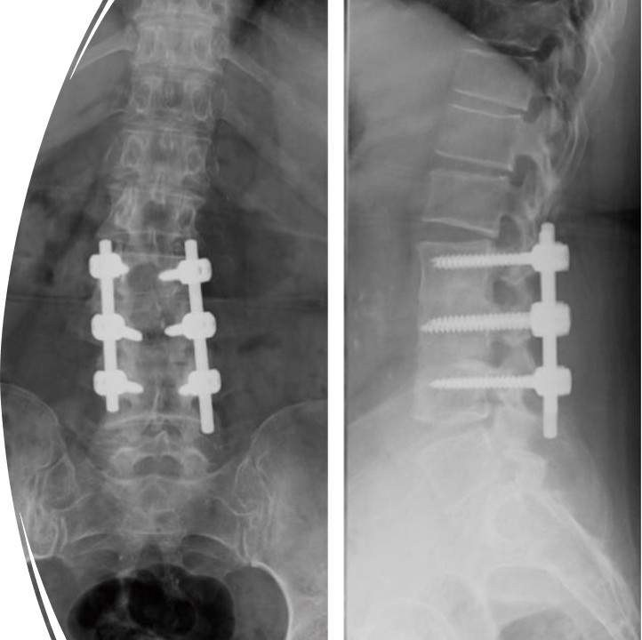
Transpedicular screws through the pedicles of L2–L4, joined by rods on both sides. They stabilize the spine after correction or decompression, e.g. for scoliosis or spondylolisthesis. From the module.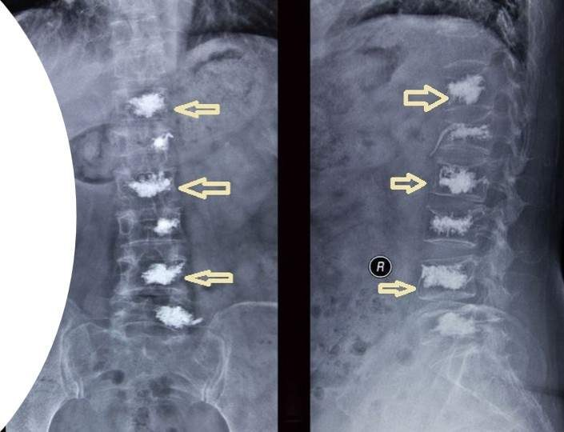
Vertebroplasty: bright cement injected into compressed vertebral bodies. The bone around it is diffusely less dense than normal. It is done for severe pain from compression fractures and to prevent progression. It does not restore height. From the module.Scoliosis and the Cobb Angle
Scoliosis is an abnormal curve of the spine to the right or left. It may also rotate, which shows as a change in the shape and position of the pedicles.
| Cobb angle | Meaning |
|---|---|
| < 10° | Within normal: a normal variant |
| > 10° | Scoliosis |
| > 50° | Usually means considering surgical correction |
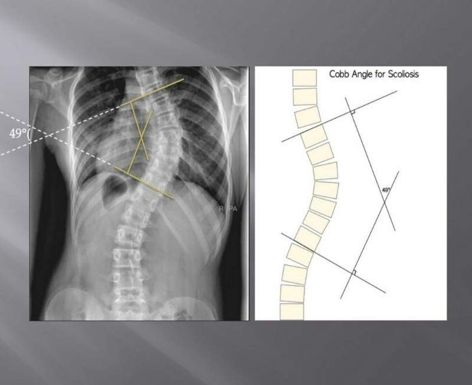
Measuring the Cobb angle. Find the most tilted vertebrae at each end of the curve. Draw a line along the superior endplate of the top one and the inferior endplate of the bottom one, then perpendiculars to each. The angle where the perpendiculars cross is the Cobb angle. This one measures 49°, just under the 50° surgical threshold. From the module.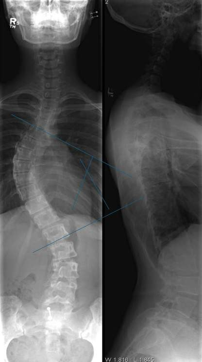
Marked scoliosis. A right thoracic primary curve and a left lumbar compensatory curve that keeps the spine balanced, with rotation. Cobb lines are drawn on the AP. From the module.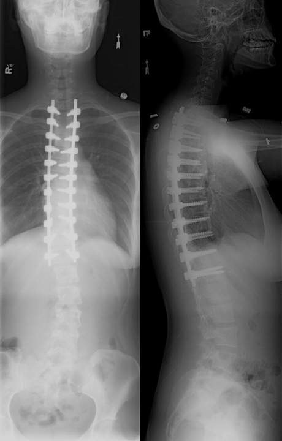
After correction: longitudinal Harrington rods and transpedicular screws across many levels, here from the upper thoracic spine to the thoracolumbar junction. They hold the correction and reduce progression. From the module.Normal Variants
| Variant | What it is | Why it matters |
|---|---|---|
| Cervical rib | An extra rib from C7, osseous (visible) or fibrous (invisible on x-ray). It may pseudoarticulate with the first rib. | A source of neck pain. It can compress the neurovascular bundle, giving pain referred into the arm and neck. |
| Transitional vertebrae | Lumbarization or sacralization at the lumbosacral junction (4 or 6 lumbar-type vertebrae) | Affects how you count the levels |
| Schmorl's nodes | Focal depressions in the vertebral endplates; the cause is debated | Usually incidental. Whether they cause pain is debated. |
| Limbus vertebra | A triangular bone fragment, usually at the anterosuperior corner: the ring apophysis (the vertebral-edge growth plate) failed to fuse. Seen in adolescents, often at L4. | Not a fracture. Usually asymptomatic. |
| Mild curve | Scoliotic curvature < 10° | Normal |
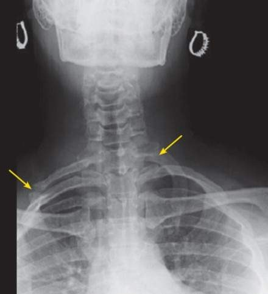
Bilateral osseous cervical ribs (arrows). The right one pseudoarticulates with the first rib. From the module.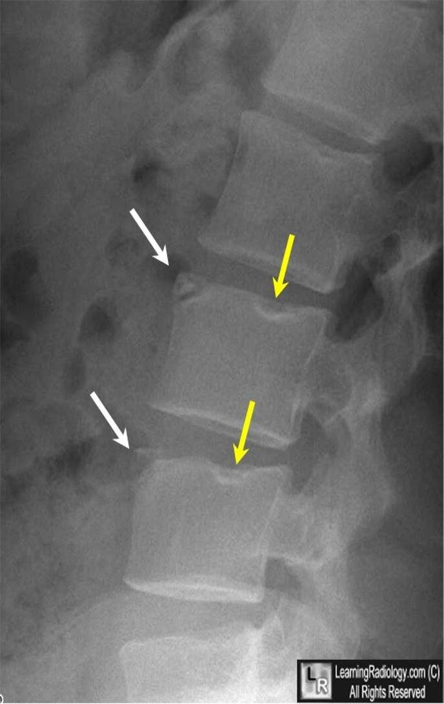
Two variants on one film. Limbus vertebrae (white arrows): triangular corner fragments, not fractures. Schmorl's nodes (yellow arrows): endplate dimples. From the module (LearningRadiology.com).Summary
The number of vertebrae, their alignment, their parts, and the anterior and posterior columns.
A break in alignment tells you where to look.
The finding may be in the soft tissue rather than the spine, as with an abscess or an airway foreign body.
Subtle abnormalities are much easier to see side by side.
Built from Dr. Vishal Kalia's “Axial Spine Radiology” Rise module (7 lessons) and its downloadable PDF. There are no recordings. The images are the module's own: plain films with their colour-coded copies, plus a few drawn diagrams. The stock “ABCS” and “TIMS-C” banners and the patient-positioning photographs are left out. Measurements (ADI, prevertebral soft tissue, cervical rib length, Cobb angle cut-offs) are quoted as the module gives them. The module itself notes that the cervical-rib length threshold varies between sources. Two things in the module don't match its own images. (1) In the C5–C7 case, the text says the front of C7 is comminuted. The labelled film, and the section heading “C5 and C7”, put the comminuted fracture at C5 and the compression fracture at C7. This page follows the film. (2) The text says the swimmer's beam enters from the front, but its positioning photo and film show a lateral projection (side to the detector, arm raised), which is the standard swimmer's view.